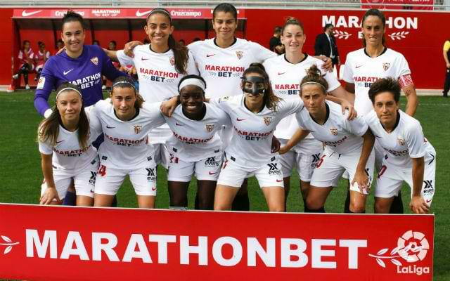
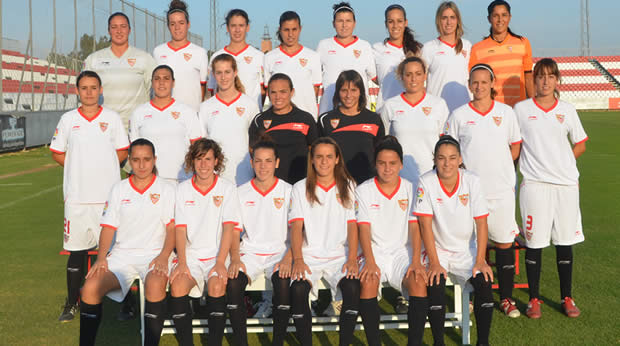

El 2004 el Sevilla FC va signar una col·laboració amb l'equip local de la Superliga Femenina CD Híspalis. Mentre era un club independent, Híspalis va jugar les properes tres temporades a les instal·lacions del Sevilla FC amb el seu nom, equip i distintiu. L’equip va millorar significativament i el 2006 va quedar subcampió de la Superliga, perdent el que hauria estat el seu primer títol davant el RCD Espanyol amb la mitjana de gols. La sevillana Auxiliadora Jiménez va ser la màxima golejadora de la temporada. El Sevilla va caure tan ràpidament com va aparèixer i el 2008 va acabar el darrer classificat i va descendir al segon nivell.

